DEEP FIELD
DEEP FIELD turns the M-VAVE FM-1 into an ambient drone machine. Each key you press starts a voice: a note that swells in, keeps sounding, slowly breathes and drifts, and fades out when you stop it. Up to eight voices play at once.
- The four knobs on the HOME page shape every voice at the same time.
- Hold a voice's key and the knobs set that voice alone: its level, tone, tuning, and whether GEN may move it.
- GEN (generate) moves the voices to nearby notes on its own, or runs an arpeggio over them.
- Thirteen models, from eight breathing harmonics to wavetables, four-operator FM, hard sync, a worn tape loop and a singing bowl.
- The reverb can freeze and shimmer.
- A preset is a sound: change preset and your chord keeps playing while the sound morphs under it. Hold SEL while you turn, and the preset's chord comes in too.
- MIDI comes in over USB, Bluetooth and the TRS jack, and goes out over USB and Bluetooth. Every knob has a CC, in and out, and the presets travel as SysEx.
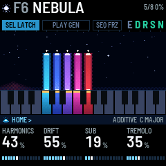
The mixer. GLO opens the MIX page, and SELECT once from there the FX MIX page: the two levels pages sit together, ahead of the scale and the rest. On MIX, BED is the level of everything latched, LEAD the notes you play over it, and OUT a trim that sits under the MASTER pot and applies to the speaker, the headphones and a USB recording alike. A thick latched chord buries an echo; take BED down a little and the delay and the hall come back into the room without touching a single effect. BED and LEAD belong to the preset; OUT is yours and stays where you put it.
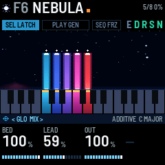
1Install
From the browser: open the installer page in Chrome or Edge and connect the FM-1 by USB. The installer can also put M-VAVE's own firmware back.
From a terminal: download the firmware file (deepfield-X.Y.fwsc, where X.Y is the version) from the site, connect the FM-1 by USB, and run python3 base/tools/fm1_install.py deepfield-X.Y.fwsc in a copy of DEEP FIELD's source code (github.com/WisestWizard/deepfield).
If an install asks for update mode, hold REC while you switch the FM-1 on.
Installing is at your own risk. If the FM-1 only shows up as a disk called WL82 UBOOT1.00, the rescue tool fm1_rescue (from felucca-bsp) recovers it.
2The first minute
Some of the FM-1's buttons do something other than their printed name: SEL is LATCH, PLAY runs GEN, SEQ is FREEZE, REC is Bluetooth, and ARP opens GEN's page (it doesn't start an arpeggio by itself). SEL is a button and SELECT is a knob: they are different controls.
- Switch on. The name appears over a vortex and falls into it along a spiral, letter by letter; after about three seconds the screen below takes over (press anything to skip it). The preset F1 FIRST LIGHT loads in silence: nothing plays until you press a key. SEL is lit, which means LATCH is on: each key you press keeps sounding.

- Press a few keys, one at a time. Each one swells in and stays, shown on the screen as a beam over its key. Its key lights up and its beam rises.
- Tap one of those keys again. That voice fades out as you let go, and its beam sinks. (Hold it and turn a knob instead, and the knobs set that voice alone: section 4.)
- Turn KNOB 1 (TIMBRE): every voice gets brighter or darker. Turn KNOB 3 (SUB): an octave comes up underneath them. The four boxes along the bottom of the screen are the four knobs.
- Press PLAY. GEN starts, PLAY lights green and the GEN page opens under the knobs. Every few seconds one voice slides to a nearby note in the scale: watch its beam move.
- Press SEQ. FREEZE turns on (FRZ lights): the reverb holds what it has. Press SEQ again to let it go.
- Turn PRESETS. The preset names scroll past with a line filling under them. Stop, and when the line is full the preset's sound blends in over four seconds, under the chord you are playing. Hold SEL while you turn, and the preset brings its own chord as well, in place of yours (section 9).
- Hold SEL and tap HOME: every voice stops. Then tap SEL: LATCH turns off, and the keys play leads, notes that sound only while you hold them (section 4).
3The screen and the lights
The screen is laid out like the panel. The strip of keys on the screen matches your keys, and the four boxes at the bottom match the four knobs. Only sound gives off light: the voices glow, and everything around them stays dark. Each colour has one meaning:
| Colour | Means |
|---|---|
| A voice's own colour | That voice (by its note): its beam, its key on the strip, its band when open |
| Sun (warm gold) | Latched: a spark over the beam, a cap on the key, a bar under a locked voice |
| White | Your hand: a lead, the voice you have open |
| Cyan | Where you are: the page band, the bars, the morph line |
| Teal | An effect that is on |
| Orange | Something to look at: unsaved changes, LOAD, a failed save |
Key lights have three levels, one meaning each:
- Bright: a voice sounds on this key, and the key is how you reach it: tap it to stop the voice, or hold it and turn a knob to set the voice alone (section 4). When GEN or SEL moves a voice, its light moves with it. A lead's key is bright while you hold it (a lead is a note played with LATCH off: section 4).
- Half: sound that is going, or not yours to touch: a voice fading out, the latched voices (the held chord) while LATCH is off, a lead fading out.
- Glow: a note in the scale. With the scale set to CHROMATIC, nothing glows.
A voice above or below the keys lights none of them.
A lead's key blinks off for an instant each time it is struck, so you can see every step of an arpeggio, or an accent on a key that is already lit. While FX is held, the keys show the effect switches instead (section 8).
Button lights:
- The open page's button is lit (half-lit while FX is held).
- SEL is lit while LATCH is on, SEQ while FREEZE is on.
- SAVE is lit while the sound or a setting (GLOBAL, MIDI or USB page) has changed since the last save, and blinks in the save dialog. Changing preset, LATCH or the octave doesn't light it, though a save keeps them too.
- PLAY shows GEN's mode by its colour: green for WALK, red for ARP, and orange (green and red together) for the others. It blinks at each RANDOM move and each ARP step.
- OCT- or OCT+ is half-lit one octave from the middle, fully lit two octaves from it.
- HOME held blinks until, at a second, it puts the preset back as saved (section 9); REC held blinks until it switches Bluetooth. SEL held is the chord's button (section 4) and has no timer.
| Part | What it shows |
|---|---|
| Header | The model's glyph, then the preset's slot (F1–F16, U1–U16) and name, with a small orange square after it while it has unsaved changes. On the right: OCT when the octave isn't zero; USB while a computer records (USB MUTE when the speaker is silenced, section 10); BLE when a computer, phone or tablet is connected over Bluetooth; DEV when the FM-1 is connected to a Bluetooth MIDI keyboard or controller; how many voices are sounding; how busy the processor is (LOAD in orange: see Troubleshooting); and, while a computer records, U and a count in orange if the recording ever dropped a frame (section 10). Below that, three pills named for their buttons, SEL LATCH (SEL TRANS while SEL held is moving the chord), PLAY GEN and SEQ FRZ, filled while on, always in the same places (while GEN runs, a white line fills along the foot of its pill toward the next move); the letters E D R S N, lit for the effects that are on (ensemble, delay, reverb, shimmer, noise) - the one place that tells you the reverb is on, since its amount lives on the FX pages; and a cyan line along the bottom edge while a preset blends in. |
| The view | The voices. Each voice is a beam of light rising from its key, in its key's colour, brightest at its foot, with a white-hot head that marks its level: you see it swell in and sink as it fades (dim), and it breathes with the voice. A latched beam has a sun spark over its head; a locked one a sun bar across its foot; an open one (section 4) white frames, with the other beams dimmed. An ARP step flashes its voice's head. When GEN moves a voice, its beam slides to the new key and leaves a mark where it started, and before the move a line reaches from its head toward a dotted ghost at the key it is going to. A voice above or below the keys (a MIDI note, or after an octave change) stands thin at the edge. The noise layer is a mound of mist where its band sits, warm when brown and pale when white, drifting with the noise's RATE and lifting with each gust. Stars drift at DRIFT's speed, each twinkling slowly on its own, over a faint horizon; FREEZE stills all of it and puts ice brackets in the corners. Turning a knob shows its name, its value large and its bar here for a moment; the beams dim but stay in view behind it. Messages such as LATCH OFF, GEN ON or SAVED appear here too, and so does the list of presets while PRESETS turns (section 9). While FX is held, the five effect switches are shown here in a row. |
| The keys strip | All 27 keys as dark glass, lit only by sound: a sounding voice's key glows in its colour, bright at the top and dimming down the key (dim while it fades), with a sun cap when latched; the keys of the scale are slightly lighter glass; a lead's key is white (grey as it fades); the held chord's keys are dim while LATCH is off; a voice's key is the one it sounds on, so it moves when GEN or SEL moves the voice; the voice you have open is framed white. |
| Footer | The page band: the icon of the button that opened the page, its name, the page's name, and < > where SELECT can go, with the model, the scale and its root on the right. Below it, the four knobs in the order of the real knobs: each name, its value (a number large with its unit small, or a word), and a bar that shows the kind of value: segments filling for an amount, one cell per choice for a list, two cells for an on/off switch, hits and rests for EUCLID. TIMBRE, SHAPE and NOISE are named for what they do on each model (section 6). While a voice is open, the band reads VOICE and its note in the voice's colour, and the four knobs are its own (section 4). |
4The keys: voices, LATCH, the scale
A voice is one sounding note, and up to eight sound at once. A key starts a voice at its note, and the voice swells in over ATTACK seconds (ENVELOPE page). Aftertouch, pressing harder on a key once it is down, makes its voice brighter and adds vibrato for as long as you press; AFTERTOUCH (ENVELOPE page) sets how much. The top seven keys (C#5 to G5) have no aftertouch.
VELOCITY (on by default; MIDI page) makes how hard you strike a key the weight of its voice. It sets three things at once: the level, over 18 dB from the softest touch to the hardest; how bright the voice is, as if you had moved TIMBRE (up to two octaves of filter on the models where TIMBRE is a filter, a gentler tilt of the harmonics on the others); and how fast it arrives, a soft note easing in at up to half ATTACK's pace. You do not have to bottom a key out for a full strike: the keybed counts its hardest 15 % as full, so a firm press is full weight and only lighter touches are held back. Switch VELOCITY off and every key strikes full, so chords are even and nothing is held back. MIDI notes always use their own velocity, whatever the switch says.
If you start a ninth voice, one fades out quickly to make room: a voice that is already fading if there is one, or else the oldest.
LATCH (SEL, lit while on; on by default): a voice keeps sounding after you let go of its key. Tap the key it sounds on to stop it (after GEN moves a voice, its new, lit key): it fades out over RELEASE seconds from when you let go. However slowly you press, letting go stops the voice, unless you turned a knob while the key was down. A latched key has a sun cap on the screen's keys strip, and its beam a sun spark over its head. Hold SEL and tap HOME to stop every voice (the screen says ALL NOTES OFF). Bringing in a preset's chord (section 9) latches its voices and turns LATCH on.
A voice's own values. With LATCH on, each latched voice can be set apart from the others:
- Hold the key the voice sounds on (its lit key).
- Turn a knob. The voice opens: the footer reads VOICE and its note, its beam and its key get a white frame, and the other beams dim. That first turn already sets the value.
- The four knobs are now that voice's own: - LEVEL: -24 to +6 dB, one dB a click, and MUTE below -24. A muted voice stays latched and silent, so ARP and GEN still use its note. A factory preset's voices carry its balance here, -3 to 0 dB, so its chord sits where the rest of the bank sits; its own velocity stays a full strike. - TONE: the voice's own TIMBRE, -50% to +50%: a dark root under a bright top. - TUNE: -50 to +50 cents, a cent a click. A few cents on a fifth makes it beat slowly; -14 cents on a major third makes it pure. - LOCK: turn right for ON, left for OFF. GEN never moves a locked voice, and ARP leaves it out, so SHIFT and PROG move the rest of the chord over it like a pedal note. Moving the chord with SEL still moves it. A sun bar across the foot of its beam marks it.
- Let go of the key. The footer goes back to the page you were on, and the voice keeps its values and keeps sounding. SAVE lights.
Hold several latched keys and the knobs move all of those voices together, each from where it is. The values travel with the voice when GEN or SEL moves it, and are saved with the preset. Over MIDI they go out as NRPN (section 11), so a computer can record them.
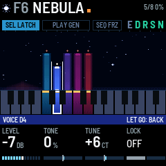
Playing leads over the held chord. Tap SEL to turn LATCH off (the screen says LATCH OFF, KEYS PLAY). The voices that were latched keep sounding: the held chord. The keys now play leads over it. A lead is a note in the preset's own sound that plays while you hold its key and fades when you let go. Leads never latch, and GEN never moves them. A key whose note is already latched plays a lead on top of its voice, as an accent. Up to four leads play at once; a fifth replaces the oldest. On the screen a lead is a thin white beam, and its key is white on the keys strip. Tap SEL again to go back to LATCH.
MIDI notes work the same way: with LATCH on, a MIDI note plays a voice that sounds until its note off (it never latches); with LATCH off, it plays a lead.
The LEAD page (ENV, then SELECT) shapes the leads: ATTACK (1 ms to 2 s), RELEASE (30 ms to 7.7 s), TRANSPOSE (up to two octaves higher, in semitones) and LEVEL (the default, 59%, sits about 2 dB over a voice, so a lead stands out over the held chord; 50% matches a voice; 100% is 9 dB louder).
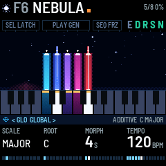
SEL held is the chord's button. A tap on SEL switches LATCH. Held, SEL does nothing by itself, however long you hold it; what you touch meanwhile acts on the whole chord:
- Hold SEL and touch a key: the chord moves there, its lowest note to that key and the other notes keeping their distance above it. While SEL is down, each key you touch moves it again; the pill reads SEL TRANS and the screen says TRANSPOSE and the note. The voices glide over GLIDE (ENVELOPE page), and their lights move with them. Over MIDI, the old notes are switched off and the new ones on.
- Hold SEL and turn PRESETS: the preset's chord comes in with its sound, over the chord you have (section 9).
- Hold SEL and press PLAY: GEN's next move comes now (section 7).
- Hold SEL and tap HOME: every voice stops (ALL NOTES OFF). The keys strike again at once, SEL still down.
Let go of SEL and the keys strike voices again (or play leads, with LATCH off), LATCH as it was.
The scale. SCALE on the GLOBAL page picks the scale: CHROMATIC, MAJOR, MINOR, DORIAN, PHRYGIAN, LYDIAN, MIXOLYDIAN, MAJ PENTA (major pentatonic), MIN PENTA (minor pentatonic), WHOLE TONE or HARM MINOR (harmonic minor). ROOT picks its root note. Every key, black keys included, always plays its own note. The scale does two things: its notes glow on the keys, and GEN only moves voices to notes in it. A voice on a note outside the scale is taken from the scale note below it the first time GEN moves it, so a chord wants the scale it was written in: a preset's chord brings its own (section 9).
OCT- and OCT+ move the keys down or up an octave, up to two octaves each way. The header shows OCT and the number.
5The four macros (HOME)
HOME is the main page. Its four knobs, TIMBRE, DRIFT, SUB and TREMOLO, are the four macros: each one shapes every voice at once - what it is made of, how it wanders, how heavy it is, how it moves. REVERB was here while it was the only effect the FM-1 had; it has its own page and the FX mixer now (section 9), and every preset comes with it on.
| Knob | Name | What it does |
|---|---|---|
| KNOB 1 | TIMBRE | How full and bright the sound is. What it changes depends on the model: on ADDITIVE, how many harmonics and how bright; on SUPERSAW, the filter cutoff (shown in Hz); on FM and FM 4-OP, the FM depth; on BOWED, the string's brightness; on WAVETABLE, a filter that follows the note. The screen names it for the model (section 6). Aftertouch adds to it for that voice, and so does the voice's own TONE. |
| KNOB 2 | DRIFT | How much everything wanders: the detuning, the slow drift of pitch, the breathing of the harmonics, and how fast the stars move on the screen. It also sets the vibrato's rate, 3.6 Hz at zero to 6.8 Hz at full. |
| KNOB 3 | SUB | An octave below, on every model: how much weight is under the chord. The same value as SUB on the OSC page. |
| KNOB 4 | TREMOLO | How much each voice fades down and back up on its own slow cycle. At full, each voice goes all the way to silence and back. TREM RATE (LFO page) sets how fast. |
MASTER is the volume of everything the FM-1 sends out: the speaker, the headphones and the USB recording. It is gentle at the bottom so headphones stay usable: a third of the way up is about 19 dB under full, halfway about 12 dB under, three quarters about 5 dB under. At full, the loudest playing still stops about 3 dB short of the top of the output, so nothing clips. Turning it glides the volume rather than stepping it, on the speaker and headphones as on the recording, so the pot never zippers.
6The pages
Each button opens its page, and the four knobs then set that page's four values, shown along the bottom of the screen. A button always opens the same page, and its light shows which page is open. Turn SELECT to step to the next or previous page, in the order of the table below: DELAY, DELAY 2 and REVERB are one, two and three steps after ENSEMBLE, for example. The page band's < and > show where SELECT can go. A page stays open until you press another page button or turn SELECT. Most values show on the screen as a percentage.
Turning the knobs. A knob shown as a percentage moves one percent a click turned slowly, so the number on the screen counts 38, 39, 40 and never steps over one: 100 clicks from end to end. Turned quickly - any click within 40 ms of the last - it moves in big steps instead, 16 clicks end to end, so a sweep is still a flick of the wrist. A knob that shows a time or a frequency (ATTACK, RELEASE, GLIDE, a free DLY TIME, SUPERSAW's and VOID's TIMBRE) covers too wide a range for every value it can show to have a click of its own, so those still move in small steps of their own; TEMPO moves one BPM a click. A knob with only a few values (RANGE, VOICES, TRANSPOSE, the delay's note lengths, FM 4-OP's patches) moves one value a click at any speed. However big the step, the sound never jumps with it: a level, a tone or an effect's amount glides to where you turned it over 10 to 20 ms (from a MIDI CC too), and a choice - a delay TYPE, a patch, a model - fades across, so turning a knob makes no click of its own.
A few names are on two pages (ATTACK and RELEASE on ENVELOPE and LEAD, RATE on NOISE and GEN, GATE on DELAY 2 and ARP, WIDTH on LFO and NOISE 2): the page band tells you which one you are turning.
| Button | Page | KNOB 1 | KNOB 2 | KNOB 3 | KNOB 4 |
|---|---|---|---|---|---|
| HOME | HOME | TIMBRE | DRIFT | SUB | TREMOLO |
| EDIT | OSC | MODEL (also on ALGORITHM) | SHAPE (named for the model) | SUB | NOISE (named for the model) |
| EDIT, SELECT once | NOISE | LEVEL (0 is off) | COLOR (brown to white) | RATE (how fast it moves, how often it gusts) | BANDPASS (wide, narrow, or on the voices: see below) |
| EDIT, SELECT twice | NOISE 2 | TYPE (hiss, rain, crackle) | GUST (how much it swells now and then) | DUCK (how far it drops under a chord) | WIDTH (its own stereo width) |
| ENV | ENVELOPE | ATTACK (fade-in, 30 ms to 20 s) | RELEASE (fade-out, 30 ms to 20 s) | AFTERTOUCH (how much pressing harder brightens) | GLIDE (how long a GEN move or a transpose takes; 0.13 s on the factory presets) |
| ENV, SELECT once | LEAD | ATTACK (1 ms to 2 s) | RELEASE (30 ms to 7.7 s) | TRANSPOSE (0 to +2 octaves, in semitones) | LEVEL |
| LFO | LFO | TREM RATE | VIBRATO (up to 40 cents either way, at DRIFT's rate; each voice a little faster than the one below) | RANDOM (a slow random drift of pitch) | WIDTH (stereo spread across the notes) |
| LFO, SELECT once | VOICES | SPREAD (how unlike each other the voices are) | CROSS MOD (pairs bending each other's pitch) | TIMBRE DRIFT (each voice's TIMBRE wandering) | PAN DRIFT (each voice drifting across the stereo field) |
| FX | ENSEMBLE | ENSEMBLE (OFF, CHOR I, CHOR II or ENSEMBLE, the fullest; switching between them ducks the effect for 15 ms rather than cutting it) | ENS MIX | – | – |
| FX, SELECT once | DELAY | TYPE (PING PONG, TAPE, DUB, REVERSE, OCT UP, OCT DOWN, GRANULAR) | DLY TIME | DLY FDBK (how many repeats) | DLY MIX (how loud) |
| FX, SELECT twice | DELAY 2 | TONE (dark or bright repeats) | DIFFUSION (echoes blurred into a cloud) | WOW (how far the tape wanders) | GATE (only slices of the sound go in) |
| FX, SELECT three times | REVERB | DECAY (how long it rings, about 0.6 to 8 s) | DAMPING (how fast the highs die away) | SHIMMER | REVERB (how much, the same value as on the FX mixer) |
| ARP | GEN | MODE | Depends on the mode (section 7) | Depends on the mode | Depends on the mode |
| ARP, SELECT once | GEN 2 | RETURN (WALK, SHIFT, RANDOM) | ROAM (PROG, LOOP) or OCTAVES (ARP, 1 to 3) | EUCLID (ARP: its hits and rests) | DIV (ARP: a step's length) |
| GLO | MIX | BED (the latched voices' level) | LEAD (the notes you play over them: the LEAD page's LEVEL) | OUT (a trim under the MASTER pot, on the speaker and on what a computer records alike) | – |
| GLO, SELECT once | FX MIX | ENS MIX | DLY MIX | REVERB | SHIMMER — every effect's level on one screen, the same four values as their own pages |
| GLO, SELECT twice | GLOBAL | SCALE | ROOT | MORPH (NOW, or 1 to 30 s) | TEMPO (40 to 240 BPM, EXT while MIDI clock comes in) |
| GLO, SELECT three times | MIDI (and the Bluetooth device, in place of the view: section 10) | IN CH (OMNI or 1–16) | OUT CH (1–16) | LOCAL | VELOCITY |
| GLO, SELECT four times | USB | SPEAKER (ON, AUTO, OFF) | USB LEVEL (the recording's level, 0 to -18 dB) | CLOCK OUT | – |
The models (turn ALGORITHM, or KNOB 1 on OSC). A new model crosses every voice over in under a second, the new sound rising as the old one fades, as a preset in another model does over MORPH (section 9).
TIMBRE (HOME), SHAPE and the fourth OSC knob do something different on each model, so the screen names each one for what it does there: TIMBRE reads CUTOFF on SUPERSAW, FM AMOUNT on FM, and so on. A knob a model doesn't use is empty. In this manual, and over MIDI, they are TIMBRE, SHAPE and NOISE.
| Model | What it is | TIMBRE (HOME, KNOB 1) | SHAPE (OSC, KNOB 2) |
|---|---|---|---|
| ADDITIVE | Eight harmonics, each breathing on its own | HARMONICS: more harmonics, brighter | ODD/EVEN: odd harmonics (hollow), then all of them, then even ones (like an organ) |
| SUPERSAW | Three detuned saws and a sub through a dark filter | CUTOFF: the filter cutoff | DETUNE: how far apart the saws are tuned |
| FM | Two-operator FM with a breathing depth and a detuned second carrier | FM AMOUNT: the FM depth | RATIO: 1, 2, 3, 3.5, 4, 5, 7 or 1.41 |
| BOWED | A bowed string | BRIGHTNESS | None (the knob is empty) |
| FORMANT | A buzz through three vowel formants | FORMANT: moves the formants up and brings the upper two forward | VOWEL: A, E, I, O, U |
| BELL | Four partials, each breathing on its own | BRIGHTNESS: brighter upper partials | INHARMONIC: from the harmonic series to a bell's ratios |
| SHEPARD | Six octaves of sine under a moving window: a rise or fall that never ends | CENTER: leans the window high or low | RISE/FALL: still at the middle; below it falls, above it rises, faster further from the middle |
| WAVEFOLD | A sine through a wavefolder (DRIFT makes the fold breathe) | CUTOFF: the filter after the fold | FOLD: how hard it folds |
| WAVETABLE | Pocket Poly's three wavetables in one sweep: ANALOG (sine to saw, square and a narrow pulse), VOX (vowels), GLASS (a bright cluster that climbs). DRIFT lets each voice's place wander. | CUTOFF: a filter that follows the note; the level stays the same | POSITION: where in the sweep; the screen names the table and its frame (ANALOG 1 to GLASS 16) |
| FM 4-OP | Four-operator FM after Pocket Poly's FM engine. Its envelopes run at ATTACK's pace, so a slow ATTACK evolves the timbre slowly. DRIFT breathes the brightness. | FM AMOUNT: how hard the modulators drive the carriers, from clean sine stacks at the bottom to a bright, metallic voice at the top. On ORGAN, the one patch with no modulator, it tilts the upper three sines instead | PATCH, one a click: GLASS PAD, BRASS, ORGAN, BELL PAD, E.PIANO, WOOD, STRINGS, CLUSTER. A patch is a different instrument - four operators change at once - so the voice dips for a moment as it changes rather than jumping |
| SYNC | A saw hard-synced to the note (Pocket Poly's sync, with every edge smoothed so it stays clean up high): the snarl of a sync sweep. DRIFT breathes the ratio, so the sound's formant slides. | CUTOFF: a filter that follows the note, and a little drive | RATIO: the synced saw's speed against the note, X1.0 to X8.0 |
| TAPE | A loop on worn tape: wow (a slow sway in pitch, its own for each voice), flutter, and now and then a dropout, the sound sinking and darkening for a third of a second. DRIFT is how worn it is: more wow, more dropouts. Everything saturates a little. | BANDWIDTH: the tape's bandwidth | SOURCE: the sound on the tape, a soft organ (0%) to a saw (100%) |
| RESONATOR | Noise played into five resonances over the note, like a singing bowl or a glass kept ringing: it sustains, shimmering as the noise moves through it. DRIFT adds a slow shimmer in their tuning. | BRIGHTNESS: how bright the upper resonances ring | MATERIAL: PURE (in tune with the note's harmonics), GLASS, BOWL, then BRONZE (a gong's crowded tones) |
SUB adds an octave below on every model, and is the third knob on HOME as well. The fourth OSC knob (NOISE) adds breath, noise or an edge: BOW NOISE on BOWED, BREATH on FORMANT, STRIKE (the hiss of the strike) on BELL, NOISE (a breath of it) on SHEPARD, NOISE into the fold on WAVEFOLD, UNISON on WAVETABLE (a second, detuned copy from another place in the sweep), FEEDBACK on FM 4-OP (grit), RING MOD on SYNC (the sound rung with the note's sine: hollow, metallic, still in tune), HISS on TAPE, and NOISE on RESONATOR (the scrape: raw noise, and the resonances wider). ADDITIVE, SUPERSAW and FM have no fourth knob.
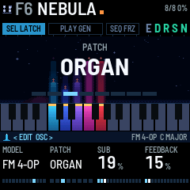
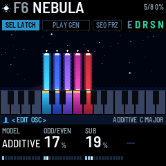
The noise layer (EDIT, then SELECT for NOISE) is a stereo noise under the voices, or on its own with no keys held: wind, sea, rain or breath.
- LEVEL turns it on and sets how loud it is (0 is off).
- COLOR runs from brown (a deep rumble, down to 25 Hz) to white.
- RATE sets how fast the noise moves and how often a gust comes.
- BANDPASS: at 0, wide open. Up to the middle, a band that narrows onto the newest note. Past the middle, narrow bands on the four loudest voices, each as loud as its voice, so the noise becomes air through the chord.
- NOISE 2 (SELECT once more) is the noise's character: its TYPE (hiss to a quarter, rain to a half, crackle beyond), its GUST (now and then, at RATE's pace, it swells louder, brighter and higher, sitting lower between; FREEZE holds the weather), how far it DUCKs under a chord, and its own stereo WIDTH.
The four macros shape the noise too: TIMBRE brightens it, DRIFT widens its wander, SUB puts an octave under it, and TREMOLO makes it breathe. REVERB (FX) sends it to the reverb. Aftertouch brightens it, and it fades in and out at ATTACK and RELEASE like a voice. Hold FX and press C4 (white key 5) to switch it off and on again. Switched back on, it returns at the level it had when you last switched it off, or else at the preset's saved level, or else at a third. N lights in the header while it is on, and its beam on the screen rises with each gust. MIDI CC 20 sets its LEVEL.
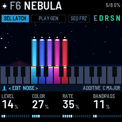
The VOICES page (LFO, then SELECT) sets how unlike each other the voices are, which is what makes eight voices sound like eight rather than one voice eight times: each voice's own small detune, TIMBRE and place in the stereo field (SPREAD), pairs bending each other's pitch (CROSS MOD), each voice's TIMBRE wandering on its own (TIMBRE DRIFT) and each drifting across the stereo field (PAN DRIFT). At 0 the voices are copies of one another; past the middle a chord starts to shimmer and move inside.
The delay. DLY FDBK sets how many repeats and DLY MIX how loud they are; above about 60 % DLY MIX climbs faster, so at full the first echo is about as loud as the note. TYPE (the first knob on DELAY) chooses what kind of delay it is:
| TYPE | What you hear |
|---|---|
| PING PONG | Left, then right, then left again, each repeat a little further away. The right-hand echo comes a little later than the left one, so the repeats never fall into a pattern. |
| TAPE | One echo in the middle, darker and grittier each time round, its pitch swaying (about 22 cents either way at WOW's default, more as WOW rises), so even over a held chord you hear it waver and beat. |
| DUB | One echo whose feedback runs through a resonant filter: every repeat is darker than the last and rings a little more around the note TONE sits on, and the two sides are 11 ms apart, so it spreads as it goes. The ring is what makes it carry over a held chord. With DLY FDBK near full it stops decaying and sits there, a ringing drone you can play against. |
| REVERSE | Each echo plays backwards: a note's echo swells up to where it started. Each backward swell rises and is cut, from alternate sides, so a held chord breathes in once every DLY TIME. |
| OCT UP | Each echo an octave higher than the last, climbing out of the drone and thinning as it goes. |
| OCT DOWN | Each echo an octave lower, sinking under the drone. |
| GRANULAR | Short pieces (40 to 150 ms) of the last two seconds, two every DLY TIME, scattered left and right, each at the note, an octave up or down, or a fifth up: a held chord turns into a glittering cloud of itself, a played note comes back in pieces. |
Turning TYPE fades the echoes out and starts the new kind fresh.
A held drone hides a plain echo: an echo of a steady sound is the same steady sound. So each kind changes what comes back: PING PONG moves left and right, TAPE wavers, DUB rings and darkens, REVERSE breathes, OCT UP and OCT DOWN change octave, GRANULAR glitters. GATE and WOW help on all of them. To hear a kind on its own, play short notes with LATCH off and no chord held, REVERB down.
- Over most of its turn, DLY TIME is a time from 50 to 800 ms, and the screen shows it in ms. On PING PONG the right-hand echo comes a little later than the left one, up to 1.1 s.
- Near the top of its turn, DLY TIME becomes a note length: 1/16, 1/8, 1/4T, 1/8D, 1/4, 1/4D or 1/2 (T is a triplet, D is dotted). The tempo comes from TEMPO (GLOBAL page, and on the GEN page with MODE set to ARP), or from MIDI clock when it is coming in, so the echoes land in time with ARP; on PING PONG the right-hand echo then lands on the beat too. A length that would be longer than 800 ms at that tempo plays at half length, still in time. On GRANULAR, DLY TIME is how often a piece comes.
- TONE (DELAY 2) filters the repeats: low, they get darker and stay full; high, they get thinner and brighter, so they stand apart from the drone.
- DIFFUSION (DELAY 2) blurs each repeat: at 0 a clean tape echo, past the middle a short burst, at full a cloud that trails the drone instead of repeating it.
- WOW (DELAY 2) sets how far the tape's pitch wanders: at 0 clean, at about a third the gentle wander the delay always had, at full seasick. A wandering echo goes slightly out of tune with the drone, and you hear it beat.
- GATE (DELAY 2) lets only slices of the sound into the delay, one at the start of every DLY TIME: at 0 everything goes in, at full a short slice. A held chord then comes back as a pulse of itself, in time with the delay. The slices are made louder as they get shorter, so the echoes stay as loud overall.
- Changing DLY TIME no longer swoops. A move of more than a few milliseconds takes the repeats out over 12 ms, lands the heads on the new time and brings them back; smaller moves glide, with the bend held inside a tone and a half. On TAPE the glide is kept, bounded the same way, because sliding is what a tape does. Before 1.1 one detent in the synced part of the knob walked the heads 2.2 samples a sample, which replayed the whole buffer at 3.2x - twenty semitones up - and that shriek was the loudest thing the delay did.
7GEN
GEN (generate) moves the latched voices by itself. Press PLAY to start it and again to stop it; when it stops, the voices stay where they are. Starting it opens the GEN page, so the knobs are MODE and its values from that moment (GEN 2, if that is open, stays open); stopping it leaves the page where it was. ARP opens the page any time. When it starts, the screen names the mode (WALK 5.1S, for example). While it runs, the PLAY pill fills up toward the next move and flashes when it comes. The pill is named for the mode: PLAY GEN for WALK, PLAY SHIFT, PLAY RANDOM and so on.
Pick the mode with KNOB 1 (MODE) on the GEN page: press ARP. KNOB 2 to KNOB 4 change with the mode, and PLAY's colour shows it:
| Mode | PLAY | KNOB 2, 3, 4 | What happens |
|---|---|---|---|
| WALK | green | RATE, CHANCE, RANGE | Every RATE seconds (give or take a quarter), with a CHANCE, one voice moves to a nearby note in the scale, up to RANGE scale steps away. It never moves onto a note another voice is playing. |
| SHIFT | orange | RATE, CHANCE, RANGE | The whole chord shifts to a related one: every voice goes the same number of scale steps, up to RANGE, one voice after another rather than all at once (below). |
| RANDOM | orange | RATE, VOICES, RANGE | Several voices move at once, each its own way, with looser timing (give or take a half). VOICES sets how many: one at 0, all the latched voices at full; the knob counts them, 2 OF 3 with three latched. |
| ARP | red | TEMPO, GATE, PATTERN | An arpeggio. The voices keep droning while a lead (section 4) steps through their notes. TEMPO is 40 to 240 BPM and DIV (GEN 2) how long a step is (an eighth note unless you change it). GATE is how long each step is held (smoothly joined at the top). PATTERN is UP (from the lowest), DOWN (from the highest), UP DOWN, RANDOM, or PLAYED (the order you struck them). The first step of each EUCLID bar is struck full and the one halfway a little under, the rest about 5 dB down, so the arpeggio has a downbeat; the accents go out over MIDI too. OCTAVES (GEN 2) spreads it over more octaves, and EUCLID (GEN 2) puts rests between the notes. Add or let go a voice while it runs and it carries on from the note it just played. ARP remembers the notes, in the same PATTERN: stop every voice (SEL and HOME) and it keeps playing until you press PLAY. A locked voice is left out: it drones under the arpeggio. The pill fills over EUCLID's steps. |
| PROG | orange | RATE, CHANCE, CHORDS | The chord is led through a progression, picked with CHORDS (below), one or two voices at a time while the rest hold. ROAM (GEN 2) sets how far the generator may develop it. |
| LOOP | orange | RATE, DECAY, OCT JUMP | A phrase you played, coming back at the velocities, the rhythm and the note lengths you played it with: a note you held for a second comes back held for a second. Closing a take sets RATE to the phrase's own length, so it loops at the speed it was played. Record one with REC (below), or just play with LATCH off and your last eight notes are caught on their own. DECAY drops notes and fades the phrase, and at 0 holds it for good; OCT JUMP throws notes an octave; ROAM (GEN 2) carries each pass to another degree of the scale. The pill counts the phrase (LOOP 5) and lights while it plays. |
Recording a phrase (LOOP). Selecting LOOP with nothing recorded puts REC THEN PLAY on the screen, since an empty loop has nothing to play. With the GEN page showing and MODE on LOOP, REC takes a phrase:
- Press REC. The screen says LOOP RECORDING and the pill counts the notes as they go in. LATCH comes off for the take, so the keys play rather than pile up a drone - it goes back on by itself afterwards.
- Play your phrase, up to eight notes. The gaps between them and how long you hold each one are both kept, so it comes back in the rhythm you played it and with your long notes long, not as a row of equal blips.
- Press REC again. The screen says LOOP PLAYING and the phrase starts looping at once.
Closing the take sets RATE to the phrase's own length, so what comes back is what you played rather than the same notes squeezed into whatever RATE happened to be set to. Turning RATE afterwards stretches or squeezes the gaps and the note lengths together, keeping the phrase's proportions. RATE's steps are about 5 % apart, so the length it lands on is within a few percent of what you played. At DECAY 0 nothing fades, however the phrase got there: DECAY is the only thing that takes a loop away. Turn it up and a phrase you only caught in passing dies faster than one you recorded, which is the difference the two are meant to have. ROAM (GEN 2) is how far it travels: at 0 it repeats at the pitches you played, and turned up each pass is carried to another degree of the scale, chosen by the same weights PROG uses, so it walks somewhere rather than wandering. REC is the Bluetooth button everywhere else - it only takes a phrase while the GEN page is up with LOOP showing.
ARP plays from the voices you have latched, not from the keys - with nothing latched it has no notes and stays silent. LOOP plays from the keys. Every other mode moves latched voices: with none, nothing moves. RANDOM has no CHANCE knob but still uses the CHANCE last set in another mode; LOOP ignores CHANCE altogether. A locked voice (section 4) is never moved.
RATE runs from 0.1 s to 60 s, shown in tenths of a second below ten. Under a second GEN stops changing the chord and starts playing it: at half a second WALK and RANDOM make a slow melody inside the chord, and with GLIDE longer than RATE the voices never land, a swarm. SHIFT that fast rolls each chord in like a strum. Under half a second the screen stops showing where the moves go (they would only flicker). LOOP never runs faster than once a second: its phrase needs the time.
EUCLID (GEN 2, in ARP) spreads the notes over a pattern of steps as evenly as they go, and rests on the others: 8/8 (every step a note), 5/8, 3/8, 7/12, 5/12, 4/9, 7/16 or 5/16. The notes move on only at a note, so four notes over five hits fall differently against the pattern every time round. DIV sets a step's length against TEMPO's beat: 1/16, 1/16T, 1/8, 1/8T, 1/8D, 1/4, 1/4T, 1/2 or 1 BAR (T a triplet, D dotted). Slow steps with a long RELEASE (LEAD page) toll like bells.
GEN 2's knobs are the mode's, like the GEN page's. A knob whose setting the mode's generator never reads is empty rather than sitting there turning to nothing: RETURN only in WALK, SHIFT and RANDOM, which are the modes that wander; ROAM in PROG and LOOP; OCTAVES, EUCLID and DIV only in ARP, since they are the runner's own. The value is kept either way - set EUCLID in ARP, go to WALK and back, and it is as you left it, and MIDI can set any of them at any time (section 11).
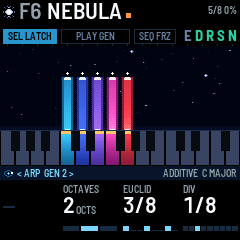
SHIFT moves the chord one voice at a time. Every voice ends up the same number of scale steps away, but they do not leave together. The voice at the leading edge goes when the countdown ends - the top voice on the way up, the bottom one on the way down, so no voice lands on a note the next has not left yet - and the rest follow one after another across the next three tenths of RATE, never more than 1.2 s apart. Some notes are always held while one moves, and that is what lets the ear hear a chord changing: in earlier versions every voice left in the same instant, and a chord sliding as one is heard as the whole instrument being bent. Stop GEN in the middle of a move and the move still finishes, so the chord is never left half moved. Each voice's line and ghost stay on the screen until its own turn comes.
Where SHIFT lands is weighed. It used to be an even draw, which rested on every chord of the scale equally often, the diminished one included. Now:
- A move of two or three scale steps is likelier than a move of one: a chord a third or a fourth away shares notes with the one it leaves, and the chord a step away shares none.
- A landing rougher than the chord you played - more notes a semitone or a tritone apart, which under a plain triad means the diminished chord - is unlikely, and when the chord does land there it stays half as long and then moves on whatever CHANCE says. A locked voice counts: it is part of what the landing sounds like.
- Straight back to the chord it just left is unlikely.
- Home pulls harder the longer the chord has been away, as hard as RETURN says (below).
- No voice goes further than an octave from its key. A move that would take any voice past that is not on offer, so the chord turns round there as one. It used to be sent back to its keys from there, a drop of up to an octave in one move.
Measured on a C major triad in C MAJOR at RANGE 3 and RETURN 0, over some 380 moves: the diminished chord fell from one landing in seven to one in forty, the octave drops from 23 to none, and no two voices left within a fiftieth of a second of each other.
PROG leads the chord; it does not shift it. Each step names the notes the next chord should contain, counted in scale degrees from where you played the chord, so the colour comes from SCALE. A voice already on one of those notes stays where it is, and of the rest only one or two move, each to the nearest note it can reach, never further than a major third and never across another voice. That is what makes it sound like harmony: the held notes are the ground, and the ear hears the others move against them. Before 1.2 every voice moved the same distance at the same moment, which the ear reads as the whole instrument sliding rather than as a chord change - parallel motion of everything is a pitch bend, not a progression. Where a voice cannot reach a note of the new chord it hangs on instead, as a suspension, and rejoins on the next long step.
No note is frozen. PROG locks nothing of its own. What holds a chord together for the ear is the common tones - a voice already on a note of the next chord stays where it is, which the leading does for every voice including the lowest - and that is enough. Earlier versions pinned the lowest note as a permanent pedal, which meant every chord of every progression was heard as an inversion over one bass note and no progression could ever arrive anywhere; it also cost a voice out of eight for as long as PROG ran. The bass now holds whenever it is a note of the chord, which is most steps, and moves on the steps where the root really changes. For a pedal, lock a voice yourself (hold its key and turn KNOB 4 to LOCK ON): PROG leaves a locked voice where it is, and the chord is led above it - or below it, for a progression whose body sinks.
Steps are different lengths. Every progression below holds some chords two, four or more times as long as others. With every step the same length nothing is an arrival and nothing is a departure, and the eight old four-step tables were square waves the ear had finished with inside two turns. The numbers are multiples of RATE, so RATE sets the pace and the table sets the shape.
| CHORDS | Where the chord goes |
|---|---|
| ROUND | A full circle down through the thirds, touching every chord in the scale and arriving home from below. Two notes are shared at every step, so it is the one that most rewards the leading. |
| UNDERTOW | Down a third, back up a step, over and over: a receding wave that keeps reaching back. |
| SLOW RISE | The mirror of it - a climb that sags back a step each time, so the brightening never turns triumphant. |
| TWO ROOMS | Really only two chords, like the old VAMP, but every arrival comes through a different door and by a different length, so it never becomes a trill. |
| OPEN DOOR | Hangs on the chord a fourth above and keeps falling home: weight and lift with nothing resolved. |
| COLOUR | Leans on the chord one step above home - the one chord that tells you which mode you are in. In PHRYGIAN that is the flat second, in LYDIAN the bright second. |
| BREATH | Home again and again, each trip away longer and one third further round, so the last return lands as an arrival. |
| STONES | A drone that leans once in a while. The only one for which a 60 s RATE is the point. |
Where each step sits. Every progression also carries a contour: how high or low the chord should sit at each step, in semitones from where you struck it. A voice already on a note of the chord keeps its pitch class and takes the octave nearer that mark, so the body of the sound really rises or falls while the harmony is untouched - one voice a step, so it reads as the music breathing. Measured from a struck C3 G3 C4 E4: UNDERTOW takes the chord's middle down about five semitones over its turn, SLOW RISE lifts it three and keeps lifting. The chord is allowed to open out as it travels, but not past an octave wider than you struck it - without that bound a single voice runs to the end of its octave leash on the first step and parks there, leaving two chords a fifth apart rather than one chord that moved. If you lock a voice yourself it is the floor the chord stays above, or, for a progression whose body sinks, the ceiling it falls away beneath.
ROAM (GEN 2, knob 2) is how far the generator may take the written progression. At 0 the table is played exactly as written. Turned up, the progression becomes the theme: the next chord is chosen by weight instead of read from the table, pulled toward what is written, away from the chord it has just left and the one before that (which is what stops it swinging between two chords), toward the degrees that have had least time so it tours the scale, and toward home the longer it has been away - a gravity that grows, which reads as intention where a fixed chance of returning reads as noise. A turn of the table is a phrase, and four turns make a section: the theme, the theme with its ending turned home, a fresh phrase at the far end, then the theme again with a chord or two redrawn - repetition with a varied ending is the only reason anyone feels a shape in the first three minutes. The step lengths and the contour are kept from the table throughout, so the rhythm and the rise and fall rhyme even where the chords do not. Every fourth turn it comes home; between those it may re-centre a fifth either way, which sounds like a change of light rather than a change of key, and never leaves the scale you chose. Measured over the same half minute, ROAM full gave thirteen different chords where the written table gave four.
Degrees 1 and 6 are no longer held back. Earlier versions used only degrees 0, 2, 3, 4 and 5, on the grounds that those five stand as a full chord in a major and a minor scale alike. That is true of those two scales and wrong in four others: in DORIAN degree 5 is the diminished one, in PHRYGIAN degree 4, in LYDIAN degree 3 and in MIXOLYDIAN degree 2 - all inside the supposedly safe set - while the chord that tells those modes apart sat outside it, which is why SCALE used to make so little difference to what you heard. DEEP FIELD now works out from the scale itself which degree carries the diminished chord and which acts as a dominant, and passes through both in one step instead of resting on them.
RETURN (GEN 2, in WALK, SHIFT and RANDOM). In WALK and RANDOM it is the chance that a voice is pulled back to the key where it started. In SHIFT it is how hard home pulls on the chord: at 0 not at all, and above that harder with every move the chord has been away, so it comes back by steps, or in one move from no further than a fifth off, instead of by a throw of the dice from anywhere. At 30 % the chord is home for about one landing in four and away for three moves at a time; at 100 %, one in three and two. In all three a voice stays within an octave of its key and turns round at the end of it. ARP, PROG and LOOP never wander from the key, so the knob is empty there. GEN leaves alone the voices held over MIDI, the locked voices, and the leads. Each move goes out over MIDI as a note off and a note on.
The next move now. Hold SEL and press PLAY: the move that is coming comes at once, and the countdown starts over. If nothing was coming (CHANCE said no, or the countdown had just begun), a move is chosen now, whatever CHANCE says. In ARP it is the next step; in LOOP the period starts over, the phrase with it. So a change lands on the beat you want rather than about then; MIDI CC 14 does the same (section 10).
Seeing where it goes. GEN picks each move when the countdown starts, so you can see it coming. A line grows from the top of the voice's beam toward the key it is going to, and a faint ghost beam stands at that key. When the move comes, the beam slides along the line and the key's light moves with it: the voice is now reached from its new key.
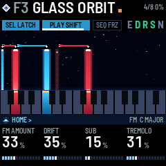
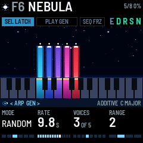
MIDI clock. While MIDI clock comes in (over USB, TRS or Bluetooth), ARP steps at DIV of it and TEMPO reads EXT; RATE counts in whole beats of that tempo (or a half or a quarter of a beat, below one), so GEN's moves land in time, and RATE reads in beats (4 BEATS, 1/2 BEAT) instead of seconds. The clock is followed from one input only: the same clock arriving on a second one (a computer on USB and over Bluetooth at once) is not counted twice. The tempo is read over a whole beat, so a clock that comes in bursts (a Bluetooth link) keeps time. A MIDI start restarts ARP. After two seconds without clock, GEN goes back to its own timing. CLOCK OUT (USB page) sends clock, with start and stop, while ARP runs from TEMPO, so a drum machine can follow the FM-1.
8FREEZE and the effects
FREEZE (SEQ, lit while on): the reverb holds what it has, forever. Nothing new goes in, nothing dies away, and it comes up to about the level of the dry sound. The voices keep playing on top, dry and through the delay. The shimmer is silent while frozen. Press SEQ again to let it go. While it is frozen, four ice brackets stand in the view's corners and the view holds still: the stars stop drifting and twinkling, the beams stop breathing, the mist stops moving.
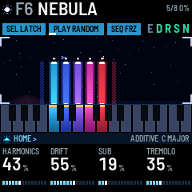
SHIMMER (REVERB page) feeds the reverb back into itself an octave higher: a rising cloud. It reads the reverb twice, 35 ms apart, one reading a side, so the cloud stands as wide as the hall instead of sitting in its middle. It can't run away, whatever the reverb's size.
Switching effects on and off. Hold FX, and the five lowest white keys become switches, on every preset:
| Key | Switches |
|---|---|
| F3 (white key 1) | Ensemble |
| G3 (white key 2) | Delay |
| A3 (white key 3) | Reverb |
| B3 (white key 4) | Shimmer |
| C4 (white key 5) | The noise layer |
Press a key to switch its effect on, and again to switch it off. Switched off, the delay and the reverb stop taking in sound and let what they hold ring out, as a pedal's spillover does (a frozen reverb stops at once). An effect the preset has at zero comes in at a useful amount: DLY MIX 27%, REVERB 35%, SHIMMER 23% (with the reverb), and ENSEMBLE CHOR I with ENS MIX at 31%. While FX is held, the screen shows the five switches in a row, each ON or OFF (the noise with its level), and the keys of the effects that are on light teal. The keys play no notes while FX is held. The switches are saved with the preset, and E D R S N in the header show which effects are on. While an effect is off, its amount reads OFF on its knob (REVERB, DLY MIX, ENS MIX, SHIMMER), and turning that knob switches the effect back on at the amount turned to.
Tap FX without pressing a key to open the effects pages instead: ENSEMBLE, then turn SELECT for DELAY, DELAY 2 and REVERB, in the same order as the keys.
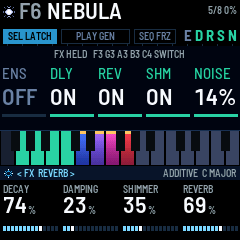
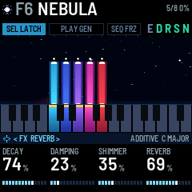
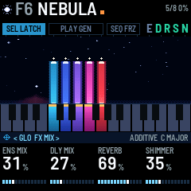
9Presets: changing and saving
A preset is a sound. It holds the values on the sound pages (HOME, OSC, NOISE, ENVELOPE, LEAD, LFO, the effects and GEN) and the effect switches. It also keeps a chord: the voices that were latched when it was saved, with their own values (section 4). The GLOBAL, MIDI and USB pages are settings instead: they stay as they are when you change preset. F1–F16 are the factory presets. U1–U16 are yours, and start with no chord.
Changing preset. Turn PRESETS. The view shows the preset you are turning to large, its neighbours on either side, and all 32 slots as a row of marks (F1–F16, then U1–U16): the one you are on in cyan, the one you are turning to tall and white. Nothing changes while you keep turning. A line fills along the foot of the view, and when it is full (0.7 s after you stop) the preset lands, and its sound blends in over MORPH seconds (GLOBAL page; 4 s by default, or NOW to switch at once). A bar along the bottom of the header shows the blend.
- Your chord keeps sounding. If the new preset has another model, each voice crosses into it, the new sound rising as the old one fades. With eight voices there is no room to cross, so they switch one at a time, low to high, and the chord never drops out at once.
- LATCH, GEN (PLAY, its colour, and while it runs its page's values too), FREEZE, the octave and the scale stay as they are.
- A delay or reverb the new preset switches off rings out.
- A MIDI program change does the same, but never brings a chord.
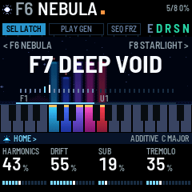
Bringing in a preset's chord. PRESETS alone never brings a chord: a chord only ever comes when you ask for it. Hold SEL while you turn PRESETS and the preset lands with its chord as well as its sound: the screen says PRESET + CHORD (+ CHORD in sun under the name in the list). Its voices come in latched, over the chord you have: the voices that are not in the new chord release (over RELEASE) while the new ones swell in (over ATTACK), so a change of section happens in one take, and nothing drops out between. LATCH turns on, and the preset's GEN values come too. To bring in the chord of the preset you are on, hold SEL and turn PRESETS one click forward and back. A preset with no chord (U1–U16 as shipped, and F16 INIT) leaves your voices alone. Every factory chord is stored on C and plays in ROOT (GLOBAL page); a chord you save plays in the ROOT it was saved in, moved to today's.
A chord brings its scale. When a preset's chord comes in, SCALE (GLOBAL page) changes to the scale the chord was saved in, and its CC goes out as if you had turned the knob. GEN moves a voice along the scale, so a chord written in another one has its notes pulled onto yours the first time they move: BOWED SKY is a Lydian voicing, and heard under MAJOR its raised fourth went flat at the first SHIFT. ROOT stays yours, and the chord moves to it as before. The scale only ever changes this way with a chord: PRESETS alone, a program change and HOME held all leave it where it is, and so does a preset saved before this version, which kept no scale.
Back to the preset as saved. What you change on a preset stays until you save or change preset, and LATCH, GEN and FREEZE carry over from preset to preset. To put the preset you are on back as it was saved, hold HOME for a second (it blinks while it counts): its sound, its effect switches and its GEN values blend back in over MORPH, the screen says its name and AS SAVED, and SAVE goes dark. Your chord keeps playing, and LATCH, GEN on or off, FREEZE, the octave and the scale stay as they are. A tap on HOME still only opens the HOME page.
Switching on. The preset you were on loads in silence: its sound is ready, and nothing plays until you press a key, or hold SEL and turn PRESETS to bring in a chord.
Saving.
- Press SAVE. The screen says SAVE PRESET TO and a user slot.
- Turn PRESETS (or SELECT, or KNOB 1) to choose U1–U16.
- Press SAVE again. The sound and the voices latched right now (each with its own values, in the ROOT and the SCALE you are in) go into that slot, and the screen says SAVED. Press HOME instead to cancel.
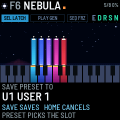
The saved preset takes the name of the preset you were playing, unless you save over the user slot you are on, which keeps its name.
Every save also stores the settings: which preset you are on, the octave, scale, root, LATCH, VELOCITY, LOCAL, MORPH, the MIDI channels, the USB page, and Bluetooth on or off. Nothing is stored until you save: switch off without saving and all of it goes back to the last save.
The factory presets. Every model appears, every GEN mode is the mode of two presets (press PLAY to hear it), and every delay type is on one. Their chords stand on C and play in ROOT, each in the scale it was written in; bring a chord in with SEL held to hear the preset as meant.
| Preset | Model | Chord | Scale | GEN | Delay | Sound |
|---|---|---|---|---|---|---|
| F1 FIRST LIGHT | ADDITIVE | C3 G3 E4 | MAJOR | WALK | – | Warm, open; the first sound |
| F2 VOID TIDE | SUPERSAW | C2 G2 C3 D4 | MAJOR | WALK | – | Low and breathing, ensemble, a brown wind |
| F3 GLASS ORBIT | FM | C3 G3 C4 G4 | MAJOR | WALK, fast | OCT UP | Shimmer; the echoes climb out of the drone |
| F4 BOWED SKY | BOWED | C3 G3 F#4 B4 | LYDIAN | SHIFT | REVERSE | Wide Lydian strings; the whole chord shifts, the echoes breathe in |
| F5 PULSAR | SYNC | C3 G3 Bb3 F4 | MIXOLYDIAN | ARP 120, 5/8 | PING PONG, gated | Dry and pulsing; a hard-sync arpeggio over a gated echo |
| F6 NEBULA | ADDITIVE | C4 D4 E4 F4 G4 | MAJOR | RANDOM | GRANULAR | A hollow cluster, very slow swells, drowned in reverb, a wind bed |
| F7 DEEP VOID | TAPE | C2 | MAJOR | LOOP | TAPE | One low note on worn tape, sub and crackle; your leads loop back an octave up |
| F8 STARLIGHT | WAVETABLE | C4 G4 D5 G5 | MAJOR | WALK | PING PONG | High glass, drifting |
| F9 CATHEDRAL | FORMANT | C3 F3 Bb3 Eb4 | DORIAN | PROG ROUND | – | An open vowel in a big hall, led through a progression |
| F10 RAIN CLOCK | FM 4-OP | C3 Bb3 Eb4 G4 D5 | MINOR | ARP 92, 5/8, random | DUB, gated | An electric piano under rain, its echo ringing; nearly dry |
| F11 GAMELAN | BELL | C4 D4 G4 A4 C5 | MAJ PENTA | RANDOM, fast | PING PONG, gated | Bell ratios, gated echo pulses; nearly dry |
| F12 BRONZE BOWL | RESONATOR | C3 G3 D4 A4 | MAJOR | WALK | GRANULAR | Singing bowls under glitter and shimmer |
| F13 ASCENT | SHEPARD | C3 G3 C4 | MAJOR | SHIFT | OCT UP | Rising, the echoes climbing with it |
| F14 DESCENT | SHEPARD | C2 G2 G3 | MAJOR | PROG UNDERTOW | OCT DOWN | Falling, dark, a low wind, the echoes sinking |
| F15 FOLDED SUN | WAVEFOLD | C3 G3 E4 A4 D5 | MAJOR | LOOP | TAPE | Bright 6/9, ensemble; your leads loop back over it |
| F16 INIT | ADDITIVE | none | – | WALK | – | Every value at its starting point: build your own from here |
10MIDI and Bluetooth
MIDI in comes over USB, Bluetooth and the TRS jack, on IN CH (OMNI, any channel, by default). With LATCH on, a MIDI note plays a voice until its note off; with LATCH off, it plays a lead (section 4). The sustain pedal (CC 64) keeps the voices going. Poly and channel pressure brighten the sound, like aftertouch on the keys; a voice starts from no pressure, so what you sent for a note before does not colour the next voice struck there. Pitch bend bends everything up to two semitones either way. MIDI clock times GEN (section 7).
MIDI out goes over USB and Bluetooth, on OUT CH. The TRS jack is in only. A key sends a note on when you press it, with the velocity you struck it at (whatever VELOCITY says: that switch only decides whether DEEP FIELD itself listens), and a note off when its voice starts to fade, which is later than your release if the voice was latched. Aftertouch on a key sends poly pressure. GEN's moves go out too. A note off always goes out at the note its note on used, whatever TRANSPOSE (the LEAD page) has done to the voice's pitch, and anything that stops the voices -- SEL and HOME, CC 123, CC 120 -- releases every note DEEP FIELD sent, so nothing is left held on a computer. With LOCAL off (MIDI page), the keys only send MIDI and don't play DEEP FIELD.
Every knob has a CC. Turn a knob and its CC goes out with the value; send the CC and the value is set, as if the knob had turned. A knob with a few values (MODEL, MODE, TYPE, PATTERN, SCALE...) is spread over 0–127 in equal parts, and goes out from the middle of its part, so what comes back is what went out. A CC coming in is playback, not editing: it never lights SAVE. The switches take 64 and up as on, the triggers 64 and up as now. So a sequencer or a DAW can record everything you do and play it back, and a knob box becomes DEEP FIELD's panel.
| MIDI CC | Sets |
|---|---|
| 1 | Vibrato (the mod wheel) · 7 Volume · 64 Sustain |
| 2, 3 | SCALE, ROOT |
| 5 | GLIDE |
| 9 | MODEL |
| 12 | The noise layer on or off (switch) |
| 13 | The preset back as saved, like HOME held (trigger) |
| 14 | GEN's next move now, like SEL + PLAY (trigger) |
| 15 | CHORDS (PROG) |
| 51 | ROAM (PROG, and how far LOOP travels) |
| 16, 17, 18, 19 | TIMBRE, DRIFT, REVERB, TREMOLO (74 and 91 also set TIMBRE and REVERB on the way in; REVERB is on the FX pages, the other three on HOME) |
| 20 | The noise layer's LEVEL |
| 21, 22 | SUB, NOISE (OSC) |
| 23, 24, 25 | COLOR, RATE, BANDPASS (NOISE) |
| 26, 27, 28, 29 | TYPE, GUST, DUCK, WIDTH (NOISE 2) |
| 30 | AFTERTOUCH |
| 52, 53 | DECAY and OCT JUMP (LOOP) |
| 54 | BED (MIX) |
| 55, 56 | EUCLID, DIV |
| 57 | LATCH (switch) |
| 58 | GEN on or off, like PLAY (switch) |
| 59 | FREEZE (switch) |
| 60, 61, 62, 63 | Ensemble, delay, reverb, shimmer on or off, like the FX keys (switches) |
| 71 | SHAPE · 72 RELEASE · 73 ATTACK |
| 75, 76, 77, 78 | ATTACK, RELEASE, TRANSPOSE, LEVEL (LEAD) |
| 79, 80, 81, 82 | TREM RATE, VIBRATO, RANDOM, WIDTH (LFO) |
| 83, 84, 85, 86 | SPREAD, CROSS MOD, TIMBRE DRIFT, PAN DRIFT (VOICES) |
| 87 | ENSEMBLE · 93 ENS MIX |
| 88, 89, 94 | DLY TIME, DLY FDBK, DLY MIX · 102 TYPE (seven equal parts) |
| 90, 105, 103, 104 | TONE, DIFFUSION, WOW, GATE (DELAY 2) |
| 106, 107, 108 | DECAY, DAMPING, SHIMMER (REVERB) |
| 109, 110, 111, 112, 113 | MODE, RATE, CHANCE, RANGE, RETURN (GEN) |
| 114, 115 | RANGE (SHIFT), VOICES (RANDOM) |
| 116, 117, 118, 119 | TEMPO, GATE, PATTERN, OCTAVES (ARP) |
| 120 | Silence at once · 121 Controllers back to rest · 123 Stop every voice (120 and 123 send the note offs) |
A voice's own values (section 4) go out, and come in, as NRPN: CC 99 picks the value, CC 98 the voice (the note it was struck at), CC 6 sets it. They go out as you turn the knobs, so a computer can record and play them back.
| CC 99 | Value | CC 6 |
|---|---|---|
| 1 | LEVEL | 0 MUTE, 1–31 = -24 to +6 dB (25 is 0 dB) |
| 2 | TONE | 64 + the value (14–114) |
| 3 | TUNE | 64 + the cents (14–114) |
| 4 | LOCK | 0–63 OFF, 64–127 ON |
A program change loads a preset's sound, as PRESETS does: 0–15 F1–F16, and 16–31 U1–U16. It never brings a chord.
The presets as SysEx. Over USB, DEEP FIELD sends and takes its presets as SysEx, so a bank can live on a computer, go to another FM-1, or be shared as a file. F0 7D 44 46 01 ss F7 asks for slot ss (0–15 F1–F16, 16–31 U1–U16; 64 every user slot, 65 every slot), and each comes back as F0 7D 44 46 02 ss 06 <the preset> F7, the preset's 118 bytes packed seven to eight (the high bits first). Send such a frame and the preset goes into user slot ss (a factory slot is refused); a frame marked 05, from a build before the velocity law changed, is taken too and its chord brought up to the new law, so it sounds as it did; about a second after the last one the bank is saved (BANK SAVED on the screen), which silences the sound for a moment, so load presets between takes. A preset that is sounding is left alone: the slot's next recall plays what came in. deepfield/tools/fm1_bank.py in the source code does this from a terminal: fm1_bank.py dump bank.syx saves U1–U16 to a file, fm1_bank.py load bank.syx sends a file back, --slot U5 puts a one-preset file in a slot of your choice, show lists what a file holds. A .syx from any SysEx tool works the same.
Recording over USB. Plugged into a computer, the FM-1 is also a USB audio input called DEEP FIELD FM-1 (stereo, 44.1 kHz). SPEAKER on the USB page (GLO, then SELECT twice) decides what the speaker and headphones do while you record:
- AUTO (the default): when a program on the computer starts using the input (an armed track in Live, a recorder), the speaker and headphones go quiet and the header says USB MUTE. The recording follows MASTER with USB LEVEL's trim under it. When the program stops using the input, the speaker comes back at MASTER.
- ON: the speaker and the recording both follow MASTER, as on M-VAVE's firmware. USB LEVEL does nothing.
- OFF: the speaker stays silent, and the recording follows MASTER with USB LEVEL's trim under it.
The header says USB while a computer is recording. USB LEVEL takes a fixed amount off the recording with AUTO and OFF, under MASTER, without touching the speaker. It is 0 dB by default, so the recording is as loud as the speaker: with MASTER full the factory presets peak between -3 and -11 dB in the recording, and eight voices played hard with every effect up stop at -0.1 dB, held there by the limiter rather than clipping. It used to start at -6 dB, which quietly took 6 dB off every recording anyone made, and a unit that had saved its settings kept that -6 dB however the default moved - so updating to 1.6 sets USB LEVEL back to 0 dB once, on any unit carrying the old value. Turn it down afterwards if you want more room in a DAW's meters and it stays there; MASTER below full leaves more room still. The recording is 16-bit stereo; the computer picks 44.1 or 48 kHz.
If the recording ever drops a frame (the processor was too busy for a moment to feed the cable), the header shows U and a count in orange beside the CPU figure, and the log counts it too; a dropped frame is a crackle in the recording, never on the speaker. The input keeps a half block more in hand than it needs, so that the heavy presets at eight voices record clean; if you see the count climb, play fewer voices or switch an effect off.
Bluetooth. Bluetooth MIDI starts when the FM-1 does. A computer, phone or tablet can connect to it as DEEP FIELD FM-1 (BLE in the header). The FM-1 can also connect to a Bluetooth MIDI keyboard or controller itself (DEV in the header), and both can be connected at once. The MIDI page shows the device in place of the view, and is where you connect one:
- Switch on the keyboard's Bluetooth, and disconnect it from any phone or tablet app: most keyboards take one Bluetooth MIDI connection at a time.
- On the FM-1, press GLO, then turn SELECT three times: the MIDI page. While nothing is connected the panel reads NOT CONNECTED, searches by itself and lists the devices it finds.
- Turn ALGORITHM to pick one (the bar on the left marks it), and press REC: CONNECTING, then CONNECTED in green with the device's name. DEV lights in the header.
- Play the keyboard. Press REC on the MIDI page to disconnect.
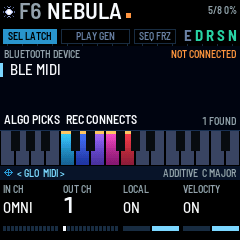
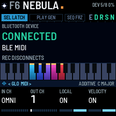
On any other page REC still works as before: press it to search (BLE SCANNING, then each device's name), turn ALGORITHM to choose, and press REC again to connect. Some keyboards (Roland's among them) only send notes over a paired link: the FM-1 pairs with them by itself the first time, with no code to type, which takes a second or two.
Hold REC for a second to turn Bluetooth off or on. Save a preset to keep that choice after you switch off.
11The screen reader
DEEP FIELD works with fm1-reader, a screen reader for the FM-1. It speaks every message the screen shows, and on request reads out the preset, the page and the page's four values. DEEP FIELD gives it the way to say each of its screen words (words.tsv in the source code).
12Troubleshooting
| Problem | What to check |
|---|---|
| A key does nothing | SEL is held: the keys move the chord (the pill reads SEL TRANS). Or FX is held: the keys switch effects. Or LOCAL is off (MIDI page). |
| A key didn't stop its voice | A knob turned while it was down, which set the voice instead (VOICE in the page band). Tap it again. |
| The knobs set one voice instead of the page | A voice's key is held (VOICE in the page band). Let go. |
| A voice won't move with GEN | It is locked: hold its key and turn KNOB 4 left (LOCK OFF). |
| Pressing a key starts a voice instead of stopping one | No voice sounds on that key: GEN or SEL moved it, and its light moved with it. Tap the lit key. |
| A voice stops when I let go of the key | LATCH is off (SEL dark). Tap SEL. |
| Aftertouch does nothing | The top seven keys (C#5 to G5) have no aftertouch. Or AFTERTOUCH (ENVELOPE page) is at 0. |
| The knobs change the wrong thing | Another page is open: check the page band at the bottom of the screen. Press HOME. |
| Voices move by themselves | GEN is running (PLAY lit). Press PLAY to stop it. |
| GEN moves faster or slower than RATE says | A MIDI clock is coming in (USB, TRS or Bluetooth): RATE counts its beats and reads BEATS, not seconds. Stop the clock or unplug it, and two seconds later GEN keeps its own time again. RATE also varies each move by a quarter either way, by design (a half in RANDOM). |
| I changed a preset and want it back | Hold HOME for a second: the preset as saved, under your chord (section 9). |
| GEN does nothing | No voice is latched. Every mode but ARP needs at least one. |
| The reverb won't die away | FREEZE is on (SEQ lit). Press SEQ. |
| SCALE changed by itself | You brought in a preset's chord (SEL held + PRESETS): the chord's own scale comes with it (section 9). Set SCALE on the GLOBAL page to change it back. |
| A preset is silent | PRESETS alone changes only the sound: hold SEL while you turn it to bring the preset's chord in (section 9). Switching on is silent too. Or a voice is muted (its LEVEL at MUTE). Or TREMOLO at full fades each voice all the way down on its cycle. Or the preset is still blending in. |
| Holding SEL does nothing | By design: SEL held is a modifier. Touch a key (the chord moves), turn PRESETS (its chord comes), press PLAY (GEN moves now) or tap HOME (every voice stops) while you hold it. A tap on SEL switches LATCH. |
| U and a number in the header | The recording over USB dropped a frame or more: a crackle in it (section 10). Fewer voices or an effect off. |
| My settings were gone after switching off | Settings are only stored when you save a preset (section 9). |
| LOAD in the header | The FM-1 once ran short of processing time, so it plays one voice fewer until things have been calm for a while. |
| The buttons or knobs respond wrongly | Hold OCT- and OCT+ while you switch on: the hardware calibration asks you to press each button and turn each knob. |
| An install was cut off | Hold REC while you switch on for update mode, then install again. |
| The MIDI page finds no Bluetooth keyboard | Its Bluetooth is off, or it is connected to a phone or tablet app: close the app or switch the phone's Bluetooth off, and the FM-1 finds it within a few seconds. |
| A Bluetooth keyboard says connected but plays nothing | Check that IN CH (MIDI page) is OMNI or the keyboard's channel. If the panel goes back to NOT CONNECTED a few seconds after CONNECTED, the keyboard refused the pairing: switch it off and on, and connect again. |